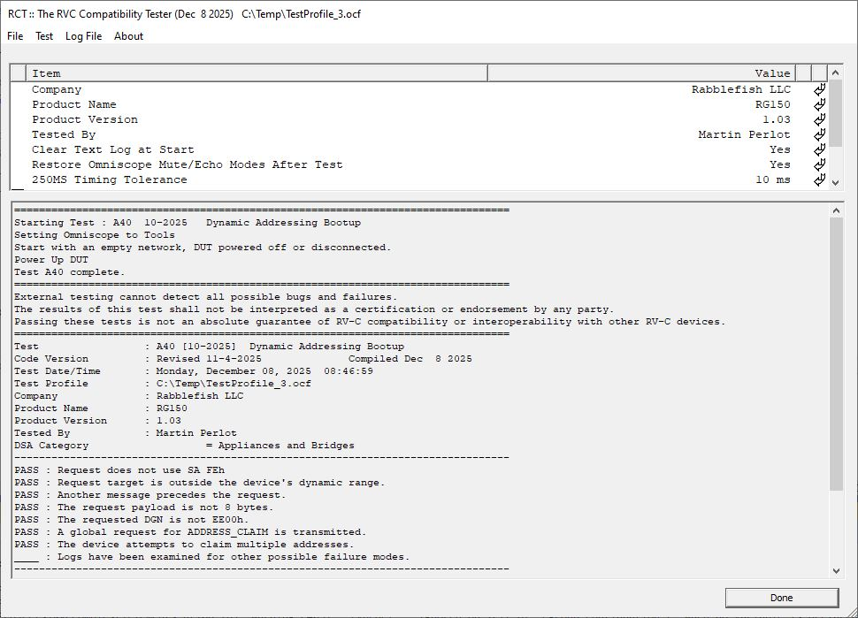
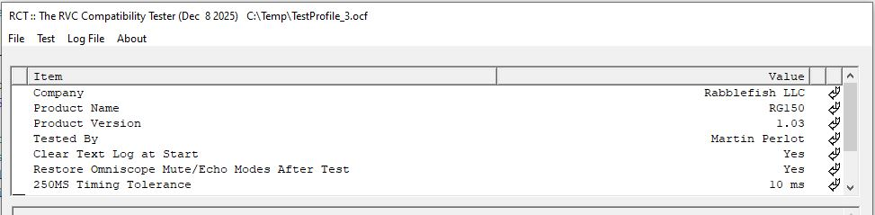

Introduction to RCT

Installation
RCT requires Omniscope to provide the PC-to-RV-C databus connection and other services. The instructions here assume that Omniscope has been installed and the adapter is plugged into the PC USB port.
Omniscope HP
Some RCT tests require more precise timing than the standard Omniscope program allows. Therefore we created a slightly supercharged version, OmniscopeHP, just for RCT. You can run RCT on standard Omniscope but some tests won't give valid results, and you can run standard Omniscope tools on OmniscopeHP but there may be stability issues.
To install OmniscopeHP, just copy OmniscopeHP.exe into your Omniscope folder. You may wish to drag it to the taskbar to "pin" the program there, and/or hold down the Alt key and drag it to the Desktop to creat a shortcut. OmniscopeHP will inherit all the settings and keys used by Omniscope, and you can go back-and-forth between using OmniscopeHP and Omniscope at will.
Key Management
To use RCT, you will need a key from Trillium Electronics. See the Omniscope page for instructions. Note that, like Omniscope, you can share RCT keys across computers.
Running RCT
RCT does not need to be targeted towards a particular device in Omniscope. You may invoke RCT by any of the methods provided in the Omniscope program, or simply by running RVCCompTest.exe from Window Explorer or a command prompt after starting OmniscopeHP.
Using Profiles

A profile is a file containing the settings used during tests. It contains information on the product and company intended to help you track and organize your tests, as well as technical parameters uses in the tests.
The data is stored in a text file with the .ocf extension. The File menu allows you to load and save the current profile, or reset the current profile to the default values. The Save option also allows you to create
a new profile under a new name.
The contents of the current profile are displayed in the box at the top of the screen. You may edit values by clicking on the left-down arrow at the right. Most technical parameters are group by the relevant tests - clicking the down arrow on the left will let you navigate to the test and the items used in that test. Note that the same setting may apply to multiple tests. Changing it for one test will change it for all.
Note that some tests will modify data within the profile.
The profile data is stored as plain text. You may take advantage of this to copy, search, or export the data.
:Program COMPTEST
:Version 1.0.0
:Created Friday, November 14, 2025 at 11:51:22
:SET Company=Rabblefish LLC
:SET Product Name=RG150
:SET Product Version=1.03
:SET Tested By=Martin Perlot
:SET Clear Text Log at Start=Yes
:SET Restore Omniscope Mute/Echo Modes After Test=Yes
:SET 250MS Timing Tolerance=10 ms
:SET DSA For Address Claiming=253
We strongly recommend that all of the identification data - Company, Product Name/Version, and Test By - be completely and accurately entered in a consistent manner. The program will automatically add the date, time and the program version information to the record for each specific test run.
Using Logs
Most of the screen is dedicated to the test log. You can expand the box by dragging the lower-right corner of the program box with the mouse.
When testing, the log box will display text as the test progresses. As the test runs, it will display the following types of messages:
- Progress messages, such as:
- Starting Test : A40 10-2025 Dynamic Addressing Bootup
- Setting Omniscope to Tools
- Test A40 complete.
- User Instructions, such as:
- Start with an empty network, DUT powered off or disconnected.
- Power Up DUT
- Follow the instructions. You don't usually have to hurry - the instructions will tell you if there is a time requirement.
- Error messasges, such as:
- DSA Category is not set. Aborting test.
- Unexpected ADDRESS_CLAIM received. Test is invalid. Aborting.
- Most errors will lead to the test being aborted.
After the test is complete, the log box will display the following information:
- The test identifier - including the published month/year - and description.
- The date of the RCT code, for the individual test and the full RCT executable.
- The date and time of the test.
- The product and company information, from the profile.
- All settings from the profile used in the test.
Test : A40 [10-2025] Dynamic Addressing Bootup
Code Version : Revised 11-4-2025 Compiled Dec 8 2025
Test Date/Time : Monday, December 08, 2025 10:04:13
Test Profile : C:\Temp\TestProfile_3.ocf
Company : Rabblefish LLC
Product Name : RG150
Product Version : 1.03
Tested By : Martin Perlot
Testing Notes :
DSA Category = Appliances and Bridges
- The list of potential failure modes, with the PASS/DNP result.
- If DNP, usually a description of the failure, plus the offending message is included.
PASS : Request does not use SA FEh
PASS : Request target is outside the device's dynamic range.
PASS : Another message precedes the request.
PASS : The request payload is not 8 bytes.
PASS : The requested DGN is not EE00h.
PASS : A global request for ADDRESS_CLAIM is transmitted.
PASS : The device attempts to claim multiple addresses.
____ : Logs have been examined for other possible failure modes.
- (Usually) One or more data logs.
- Some messages in the log may be parsed.
Log size : 3 msgs
4.811 18EADAFE REQUEST [DA] 0EADA:FE 00 EE 00 FF FF FF FF FF
~~DGNRequest [218]=EE00
4.911 18EE00DA ADDRESS_CLAIMED 0EE00:DA 47 53 DF 0E 33 FF 00 80
5.662 19FDE6DA CAN_BUS_STS 1FDE6:DA 04 FF FF FF FF 10 F1 FF
The test log may be saved to a text file. By default RCT will name the file by the product name, test ID, and test date/time (e.g. RG150_A40_2512080846.txt). You may edit this before saving. You may also copy the log to the clipboard.
The test log may occasionally display messages outside the testing process. The OMNISCOPE may have crashed! message usually indicates that the Omniscope program has lost communications or otherwise stopped working. You may be able to revive Omniscope by selecting Reconnect from its menu. If not, usually you will need to close RCT and restart Omniscope and RCT again. If the problem persists, try to simplify your setup and run as few programs as possible. Windows is not a real-time operating system and OmniscopeHP needs as little latency as possible.
Inspecting the Data
In the results list, some failure modes will not have a PASS or DNP, but instead will have a blank line (____). These are items that require human inspection to confirm. The data logs should have all the relevant raw data. We recommend editing these fields after saving the log file to a file, using the inspectors initials to indicate a Pass.
No automated test can catch every possible failure mode. Even for the simplest tests, it is essential that the tester inspect the data logs for discrepancies that the code didn't catch.
Each data log may be filtered to make them easier to analyze. Typically they may be filtered to include only messages from specific addresses or specific DGNs. Consult the document for the specific test on this site.
1.096 18EE00D9 ADDRESS_CLAIMED 0EE00:D9 47 53 DF 0E 33 FF 00 80
~~NAME=4753DF0E33FF0080 ~~ArbAddrCapable=1 ~~ManufacturerID=118
The first item in the log is the timestamp for the message. This is in seconds and milliseconds. Messages received are timed as they appear on the data bus. Unfortunately, messages sent by RCT through Omniscope are timed by when they are queued and thus can be off by several milliseconds. It is for this reason that most time-sensitive tests include a setting for the time error tolerance.
The full entry is parsed as follows * Timestamp. 1.096 = 1.096 seconds since the start of the test. * Full CAN ID. 18EE00D9 = CAN Identifier * DGN Name. ADDRESS_CLAIMED * DGN. 0EE00 = DGN in hexadecimal. * Source Address D9 = Source Address in hexidecimal * Data. 47 53 DF 0E 33 FF 00 80 = Data packet, in hexidecimal.
Following the message may be the literal parsing. The syntax follows the format used in the RV-C Sniffer.
Editing the Test Log
After the test is complete, the data log may be edited.
This is a crucial step, allowing the addition of explanatory notes and the manual entry of test results. Some failure modes cannot be fully evaluated automatically and are indicated in the log with a "____" result. These blanks should be filled in manually. For clarity, the manual codes should be distinct from the automatic codes of DNP and PASS.
For more information, click here.
Aborting a Test
If you need to terminate a test prematurely, select Test - Abort.
You can select Test - Repeat Last Test to run the same test again.
Saving the Results
By selecting Log File - Save Log, you may save the log file to your drive. We highly recommend that you save the file with the name RCT automatically generates, and save all the test results for a particular product in the same folder. This will enable RCT to create an accurate and complete Summary Report. See Test File Management.
Skipping a Test
There are several reasons why you may wish to skip a test. The test may not apply to your specific product - e.g. the Static Addressing tests do not apply to Dynamically Addressed products. The test may not be required for the target application as defined by the OEM. Or your organization may have other reasons to delay testing. You can easily document the decision by selecting Test - Log a Skipped Test. You can select the test and the justification and RCT will generate a log file. You may edit the justification in the log file before saving the file to your drive.
The test log will look something like this:
================================================================================
================================================================================
================================================================================
Test : A10 [10-2025] Static Addressing Bootup SKIPPED!!!
Code Version : Revised 10-31-2025 Compiled Dec 15 2025
Test Date/Time : Monday, December 15, 2025 11:15:01
Test Profile : C:\Temp\TestProfile_3.ocf
Company : Rabblefish LLC
Product Name : RG150
Product Version : 1.03
Tested By : Martin Perlot
Testing Notes :
Reason Skipped : Device Not Designed to Pass
--------------------------------------------------------------------------------
--------------------------------------------------------------------------------
Do not edit the section markers - the Summary Report creator uses them to identify the different sections in the standard report. You may edit the Reason Skipped, which will appear in the Summary Report.
Remember to save the log file.
Troubleshooting Tests
Tests - especially those involving timing of indeterminant events - don't always fit easily into a simple flowchart. If a test does not seem to advance as you expect, usually it is because your device is not responding as expected. In which case, congratulations! You have discovered a new failure mode. Contact Trillium Electronics and we'll update RCT to incorporate your discovery.
However, it is possible that the fault lies in RCT, and our failure to fully capture the complexity of the interactions. If so, contact Trillium Electronics. Before you do, select Test - Verbose Mode and run the test again. Verbose Mode adds additional information to the test log specifically to facilite debugging. If the test "hangs", click the Dump Status button before aborting the test. Send that log, along with a description of your test setup and the problem you are encountering. Verbose Mode does not impact the validity of the test procedure itself.
Staying Up-to-Date
RCT is completely self-contained. The only file you need to update regularly is the executable itself.
Version Checking
By selecting About-Get Version Report, you can get a report in the log box describing the current version levels.
Program Compiled : Dec 8 2025 09:31:33
RAC Read ADDRESS_CLAIM N/A N/A
A10 Static Addressing Bootup 10-2025 10-31-2025
A20 Static Addressing - Lower Priority Conflict 10-2025 10-31-2025
A30 Static Addressing - Higher Priority Conflict 10-2025 10-31-2025
. . .
The program compilation date is relevant only if a significant bug is discovered in RCT itself. More important are the two dates given for each test. The first date (e.g. 10-1025) is the revision date of the test as it appears in the RV-C Test Procedures document. (https://www.rvia.org/rv-c/rv-c-testing-procedure-document) The second is the revision date of the code in RCT itself. The RCT code may change either due to a change in the published test or the discovery of a bug in the code. A change in either of these values suggests that a retest may be in order.
Using Github
RCT (RVCCompTest.exe) is kept by Trillium Electronics in a public Github repository. You may choose to automate the updating process using Git, or you may manually check the file date at https://github.com/TrilliumElectronics/RCT_Public
The Tests
A: Address Claiming
Click here for Address Claiming test documentation.